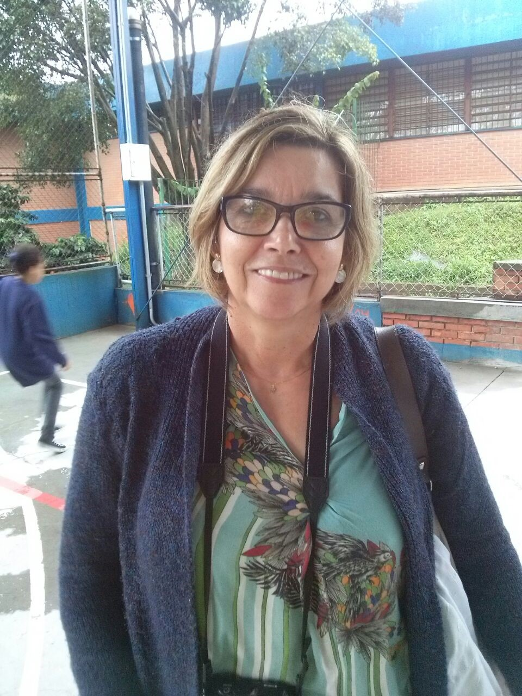
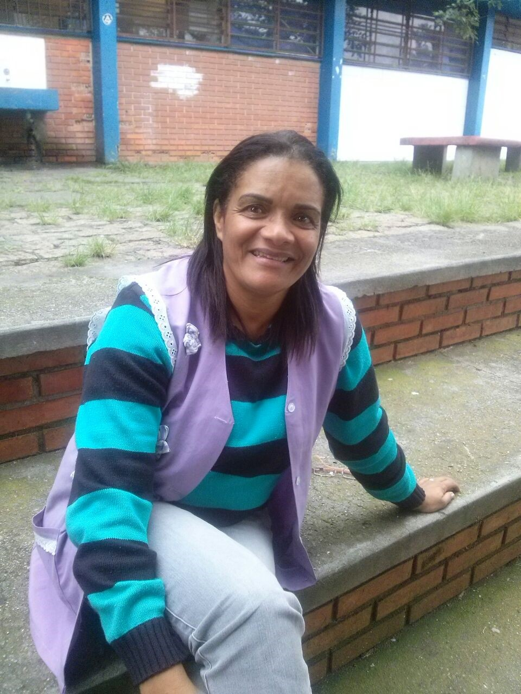
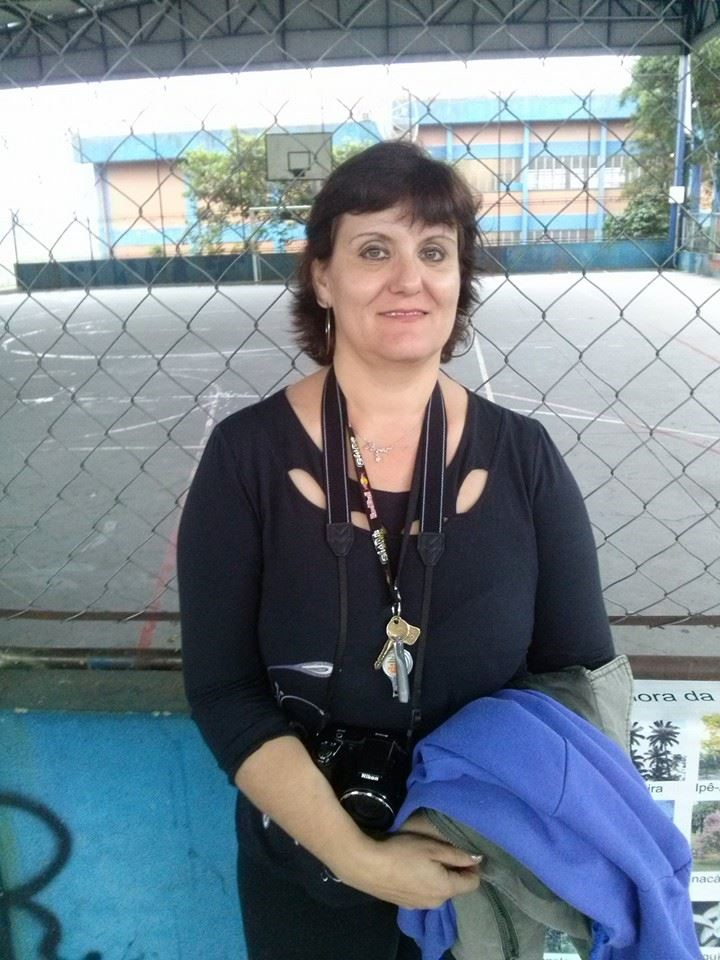
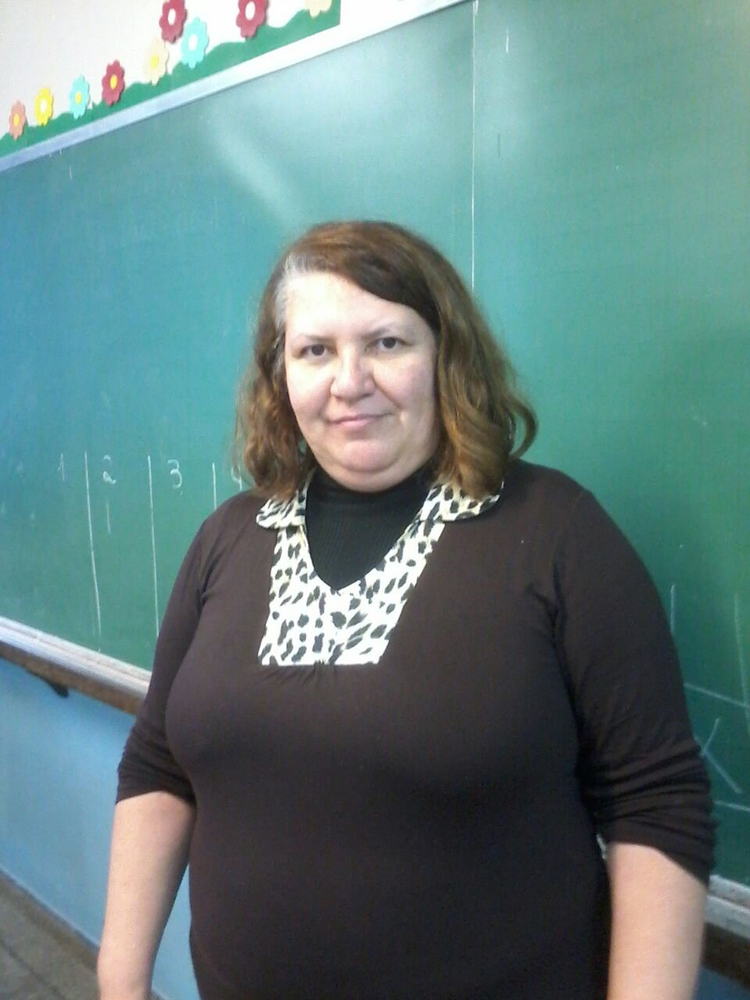
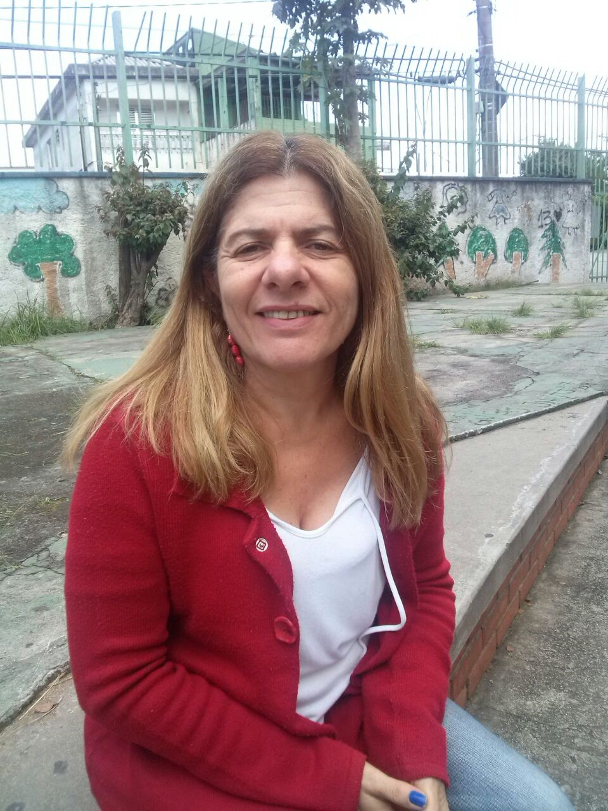
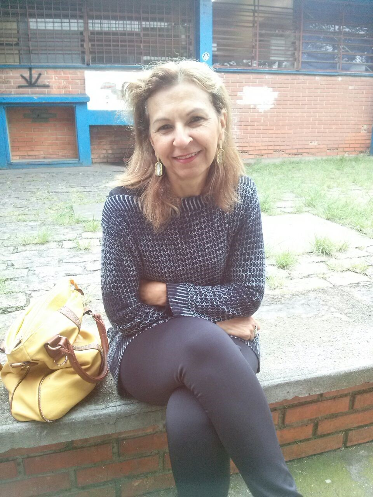

"Esse projeto é excelente pois tudo o que você faz com a criança você vê resultado... Já a criança não, se ela aprende ela passa a prática!"
Professora Claura - Leu o livro 'Joody salva o planeta'
"A oficina realizada foi muito além das expectativas... É um livro tem um conteúdo e uma linguagem excelente para trabalhar com as crianças."
Profa. Marina - Trabalhou o livro 'Mestre das Artes Leonardo da Vinci'
"Eu achei ótimo o projeto, pois incentiva as crianças a lerem. Livros com temas diferentes e lúdicos que incentiva eles a parte prática como oficinas, maquetes..."
Professora Rosemaire - Trabalhou o Livro 'Iara e a Poluição das Águas'
"Esse projeto é muito bom as crianças conseguem vivenciar a leitura que fizeram na oficina, e vocês já estão divulgados no meu facebook."
Professora Rita - Livro 'De onde vem esses animais?'
"O projeto é muito bom, pois além da leitura dos livros que são interessantes, a dinâmica que vocês usam é diferente, é muito rica, pois as crianças vivenciam a experiência do livro com o próprio corpo!"
Professora Regina - Livro 'Azul e o Lindo Planeta Terra'
"O projeto é ótimo para os alunos e muito importante para a formação deles. O livro é maravilhoso tem curiosidades que nem eu professora sabia. Vocês estão de parabéns."
Professora Juraci - Livro 'Almanaque Bichos do Brasil'